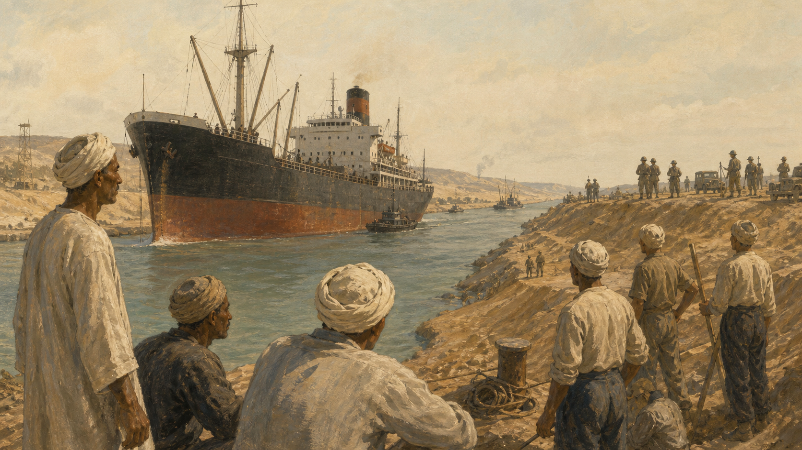

清晨五点，穆罕默德爬上舷梯。脚下是一艘比城市街区还长的集装箱船，船头几乎遮住东方的霞光。他是苏伊士运河领航员，接下来十多个小时里，要陪船长把这座漂浮的钢铁大楼带过一条狭窄水道。船舱里装着手机零件、冰箱、药品和咖啡；船外则是沙、风，以及埃及的一条国家命脉。

世界被压进一道窄门
领航员并不会取代船长。他熟悉风向、流速、会船规则和岸上信号，像一位了解老城每条巷子的向导。苏伊士没有巴拿马那样一层层抬船的船闸，大体上是一条海平面运河；可这不代表它简单。巨轮惯性极大，岸壁产生的水动力会把船吸向一边，沙尘和能见度又随时改变。船只编队、拖轮待命、调度中心盯着屏幕，全球贸易的“自由流动”，原来依靠无数人精确地服从时刻表。
如果不走苏伊士，从亚洲到欧洲的船往往要绕过非洲南端的好望角。地图上的弧线只是多画一笔，现实里却多出燃油、工资、保险、船期和碳排放。2024年红海安全危机令大量船舶改道时，东非港口、欧洲仓库和亚洲工厂几乎同时感到震动。水门的力量不在于它制造商品，而在于它重新安排距离。
一百五十多年前，法国工程师费迪南·德·雷赛布也向投资者讲“缩短距离”的故事。但对挖渠的埃及农民来说，这条线不是抽象进步。大量劳工在强制征发、疾病、缺水和恶劣条件中工作，死亡人数的精确统计至今有争议。历史记忆提醒我们：宏伟工程的纪念碑常刻着设计者姓名，却很少刻下每一双挖土的手。
谁出钱，谁就以为自己拥有未来
连接地中海与红海并非十九世纪才有的念头。古代埃及和后来的统治者曾修筑连接尼罗河与红海的水道，但淤塞、战争和政权更替让它们反复废弃。蒸汽船与工业资本到来后，问题发生变化：欧洲工厂需要更稳定地获得亚洲原料，也需要更快卖出制成品。1854年，德·雷赛布从埃及总督赛义德帕夏取得特许，苏伊士运河公司随后成立。
1869年开航典礼灯火辉煌，欧洲王室和政要云集。可是埃及为现代化工程承担了沉重债务。1875年，财政吃紧的赫迪夫伊斯梅尔将埃及持有的运河公司股份卖给英国政府。英国首相迪斯雷利迅速借款完成收购，因为通往印度的航线关系到帝国安全。几年后英国军事占领埃及，运河虽在埃及土地上，却被外国资本与军力牢牢围住。
这里要区分三件事：土地属于谁，公司由谁经营，航道在战争中由谁保护或封锁。1888年《君士坦丁堡公约》提出运河在和平与战争时期对各国商船和军舰开放，但条约文字并不会自动消除强国实力差距。英国可以说自己维护“国际通道”，埃及民族主义者却看到外国人在本国土地上决定收入与安全。两种叙事都使用“秩序”一词，却指向不同的秩序。
史料怎样说话
阅读十九世纪公司报告时，要留意“文明”“开发”“效率”等词。它们记录了当时投资者的自我理解，却不能代替劳工经历。把公司档案、埃及财政史和工人记忆放在一起，历史才不会只有董事会的视角。
纳赛尔说出一个暗号
1956年7月26日，埃及总统纳赛尔在亚历山大港演讲。他讲到德·雷赛布的名字，那是预先约定的行动暗号。埃及人员随即接管苏伊士运河公司。纳赛尔宣布国有化，并计划用运河收入支持阿斯旺高坝。街头听众听见的是摆脱殖民控制；伦敦和巴黎听见的却是资产被夺、战略通道失守。
英国、法国与以色列秘密协调。以色列军队进入西奈，英法以“隔离交战双方、保护运河”为名发出最后通牒并发动攻击。这个说法在军事计划早已协同的证据面前站不住脚。可是战争结局也不是一句“埃及打败三国”能够概括：埃及军队在战场承受压力，英法却遭到美国、苏联、联合国及国际金融市场的强烈反对，最终撤军。
苏伊士危机成为帝国时代落幕的路标。英国和法国仍有舰队，却发现军事能力已不能随意转化为政治结果；美国反对盟友冒险，也显示战后西方权力中心转移；纳赛尔在阿拉伯世界声望大涨，尽管埃及付出了人员与设施损失。对许多殖民地人民而言，这是“小国收回自己东西”的故事。对运河使用国而言，问题则是：一条全球通道能否由单一沿岸国稳定管理？
埃及民族叙事
运河由埃及土地和劳动建成，收益长期外流。国有化是主权与尊严的恢复。
英法当时叙事
突然改变公司控制会威胁通航和投资安全。但这种担忧不能为秘密策划战争提供合法性。
父子暂停一下
如果一项设施建在甲国、由乙国资本建设、服务许多国家，它应由谁决定收费和管理？试着分别站在沿岸居民、投资者和普通消费者的位置回答。
同一个工程师，另一种失败
苏伊士成功后，德·雷赛布成了工程时代的明星。他相信巴拿马地峡也能被海平面运河切开。可是巴拿马不是平坦沙漠：热带暴雨让查格雷斯河骤涨，山体不断滑坡，黄热病和疟疾夺走工人生命。法国公司从1881年开工，资金在错误估算、管理混乱和腐败中耗尽，1889年破产。数以万计的加勒比劳工、欧洲技术员和当地人付出生命，死亡估计因档案口径不同而不一。
美国接手时，不仅买下法国公司的设备和权利，也换了设计。工程师用加通坝拦住河流，造出巨大的加通湖；船从大西洋一侧被船闸抬升到湖面，横穿山地后再降到太平洋。医生威廉·戈尔加斯团队依据蚊虫传播疾病的新知识排水、纱窗灭蚊，卫生改善与工程机械同样关键。1914年运河通航，船只不必再绕南美洲合恩角。
但“美国建成运河”这句话省略了政治前提。1903年，巴拿马从哥伦比亚独立，美国军舰阻止哥伦比亚军队迅速镇压。新政府很快签署《海—布瑙—瓦里亚条约》，给予美国近乎永久控制运河区的权利。代表巴拿马签字的布瑙—瓦里亚是法国人，并非巴拿马公民。美国叙事强调承担风险、投入资本和工程能力；巴拿马记忆则强调弱国在诞生之初被迫接受不平等安排。
运河区里有另一套世界
运河区像一条横穿巴拿马的美国管辖带，有自己的警察、学校、商店和住宅。更刺眼的是劳工等级。建设时期和早期运营中，工资表常分“金榜”与“银榜”：美国白人员工通常拿金币并享受更好待遇，来自巴巴多斯、牙买加等地的黑人劳工多被列入银榜。制度名称看似技术，实际把种族、国籍和收入写进日常生活。
1964年1月，一面国旗点燃冲突。巴拿马学生要求按协议在运河区学校旁升起巴拿马国旗，与美国旗并列。争执升级，造成多人死亡。对美国区居民来说，他们担心熟悉的生活和运河安全被政治浪潮冲走；对巴拿马年轻人来说，在本国土地上升旗竟需争取，本身就是屈辱。死者后来被称为“烈士”，事件推动双方重新谈判。
1977年，美国总统卡特与巴拿马领导人托里霍斯签署两项条约，规定逐步移交，并确认运河永久中立。1999年12月31日，巴拿马完全接管运河。交接不是简单换旗：巴拿马需要证明自己能稳定运营、投资扩建并维持国际信任。事实表明，国家主权与专业管理并不矛盾；真正困难的是建立透明、可靠且不把运河当短期提款机的制度。
控制水门的最高形式，不是让别人无法通过，而是让所有人相信规则明天仍然有效。
沙漠要清淤，雨林要蓄水
苏伊士看似自然水道，实则需要持续疏浚、拓宽和交通管理。船越来越大，运河也不断扩建。2015年埃及启用新航道区段，让部分路段可以双向通行。2021年“长赐”号搁浅六天，全世界从卫星图上看到一个简单事实：通道再宽，也可能被一艘横过来的船堵住。拖轮、挖泥船和救援人员最终让船脱浅，但排队船舶与延误成本已跨越海洋。
巴拿马的核心约束不是沙，而是淡水。每次传统船闸运行，都要让大量湖水向海洋流去。加通湖同时承担航道和居民供水功能。2016年第三套船闸启用，可接纳更大的“新巴拿马型”船，并使用节水池回收部分水量；但它没有消除降雨风险。2023至2024年的严重干旱迫使运河限制每日通行和船舶吃水，货主竞价、改道或少装货。
截至2026年8月，较充足降雨使巴拿马运河通行能力较干旱高峰恢复，运河管理局仍把长期水安全列为核心任务，并推进里奥印第奥水源项目；该项目也涉及土地、生态与家庭搬迁，不能只被描述成“多修一个水库”。同一滴雨既可能是居民的饮水、森林的生命，也是一次船闸通行的生产资料。气候变化让主权问题多出一层：国家即使拥有运河，也未必拥有可随意调度的天气。
水门关闭时，谁先感到疼
大型航运公司可以重排船期、签保险、把附加费写进合同，小商户和低收入家庭却很难对冲风险。运费上涨不会平均落在每件商品上：低价值、体积大的粮食和原料对运输成本更敏感；依赖单一航线的小岛国家和发展中国家，选择更少。一个欧洲消费者也许只是晚两周收到家具，一个东非进口商却可能面对粮价和外汇压力。
运河沿岸居民也不是天然受益者。苏伊士收入进入埃及国家财政，但收益如何转化为学校、医疗和就业，是分配制度的问题。巴拿马运河向国库贡献可观收入，也提供专业岗位；与此同时，水源项目附近家庭担心祖屋、耕地和社区网络被“国家需要”压过。把居民反对一概称为自私，或把所有工程一概称为掠夺，都过于轻率。
运河工人拥有另一种全球视野。他们看到不同国旗的船，却知道船员可能来自菲律宾、印度、中国、乌克兰或希腊；他们知道货物属于跨国公司，但值班、检修和救援总由具体的人完成。全球化不是商品自己在地图上滑动，而是许多人把风险接力传递。
父子暂停一下
家里找一件进口商品，设想运河关闭一个月。它一定涨价吗？谁可以改道、换供应商或等待，谁没有这些选择？把“全球事件”翻译成一张家庭账单。
中立不是没有政治
两条运河都以开放和不歧视作为合法性的基础。苏伊士受1888年公约框架影响，巴拿马运河的永久中立由1977年条约安排确认。然而战争会逼迫管理者回答困难问题：交战国军舰能否通过？制裁货物如何处理？一艘船的所有者、注册旗国、运营商和货物来源可能分属不同国家，所谓“敌船”远比十九世纪复杂。
1967年第三次中东战争后，苏伊士运河关闭八年。十五艘货船被困在大苦湖，船员建立“黄舰队”社区，举办运动会、制作邮票，轮班照看船只。轻松轶事背后，是航线长期改写：船东建造更大油轮绕行好望角，港口和炼油设施随之调整。基础设施一旦中断，市场不会原地等待，它会创造替代系统。
这也解释了为什么控制权不等于随意关门。沿岸国从通航费、就业和国际信誉中获益，使用国则需要可预测性。双方互相依赖，却并不平等。军力强国可以护航或施压，大公司可以改道，小国和小企业承受剩余成本。所谓中立，必须靠条约、专业机构、外交克制和每天不引人注目的操作共同维持。
相似的水门，不同的主权路
苏伊士由埃及境内的特许公司开始，外国股份和英国占领把它嵌入帝国网络，1956年国有化以危机方式完成控制权转折。巴拿马则由条约制造出美国管辖的运河区，经过长期抗议和谈判，在1999年完成移交。前者的标志性时刻是纳赛尔演讲和战争，后者的标志性时刻是条约日历走到终点。
两条道路也有共同点。工程都借“服务世界”获得正当性，却由处于权力中心的人决定融资和劳动；沿岸社会都经历了收益外流与民族主义；真正收回控制后，又必须面对经营效率、腐败风险和国际义务。反殖民胜利不是故事终点，而是“怎样把象征主权变成公共能力”的开端。
我们还应警惕一种倒置：因为后来的国家管理有效，就淡化早期不平等；或因为建设过程不公，就否认工程给世界带来的实际便利。历史理解不要求只选一边。运河既缩短航程，也制造牺牲；既是国家资产，也是国际公共通道；既显示工程理性，也暴露人类对自然条件的依赖。
真正的水门钥匙
截至2026年8月，苏伊士仍受到红海安全局势和船公司风险判断影响；巴拿马则在通行恢复后继续为下一次干旱准备。两条运河面对的威胁不同：一边是战争、导弹与保险价格，一边是降雨、湖水与社会协商。但它们都说明，二十一世纪的基础设施安全不能只靠加宽航道或部署军舰。
企业需要分散供应链，政府需要储备与危机沟通，运河管理者需要维护设备、生态和信任，消费者也要理解“最快、最便宜”往往把冗余挤掉。效率像把所有车辆引向一座最短的桥；韧性则是在旁边保留一条看似浪费的路。两者没有免费的完美平衡。
黄昏时，穆罕默德看着巨轮驶入地中海。他没有“控制世界”，只是完成一班工作。巴拿马的船闸员也只是按下闸门按钮、观察水位。然而世界水门的钥匙恰恰由这些普通操作组成：法律让权力有边界，技术让承诺可兑现，公共制度让收益不只流向少数人，克制让狭窄航道不成为冲突借口。运河最深的历史，不是人类劈开陆地，而是人类能否学会共同使用一道窄门。
夜谈问题
- 一条位于单一国家境内的国际通道，应优先服务本国利益还是全球通行？
- 外国资本承担建设风险后，应当拥有多长时间、何种程度的控制权？
- 1956年的国有化与战争中，哪些主张可以理解，哪些行为不能接受？
- 如果缺水迫使巴拿马在居民饮水与运河通行之间选择，公平标准应是什么？
- 为供应链韧性多付一点钱，消费者和企业愿意付到什么程度？
- 今天建设跨国大工程，怎样才能让劳工、沿岸居民和未来世代真正进入决策？